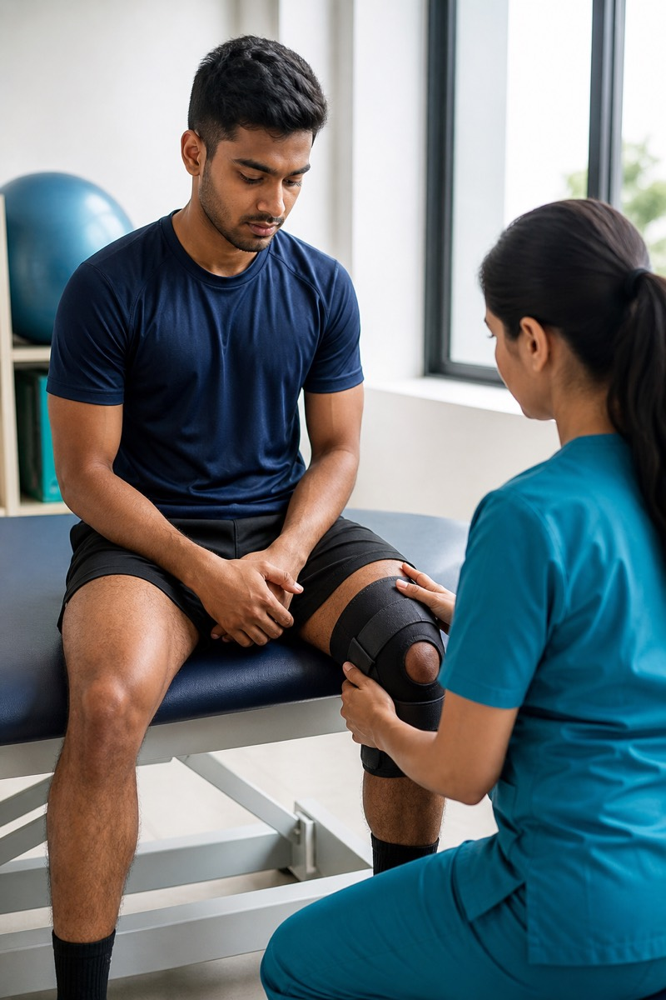

ACL / Meniscus Injury Treatment
Twisting injuries on the football or cricket field often involve the ACL or meniscus. Care is planned around your sport, age and knee stability.
Twisting injuries on the football or cricket field often involve the ACL or meniscus. Care is planned around your sport, age and knee stability.

ACL rehab is typically 6–9+ months before unrestricted pivoting sport. Meniscus repair may have weight-bearing restrictions.